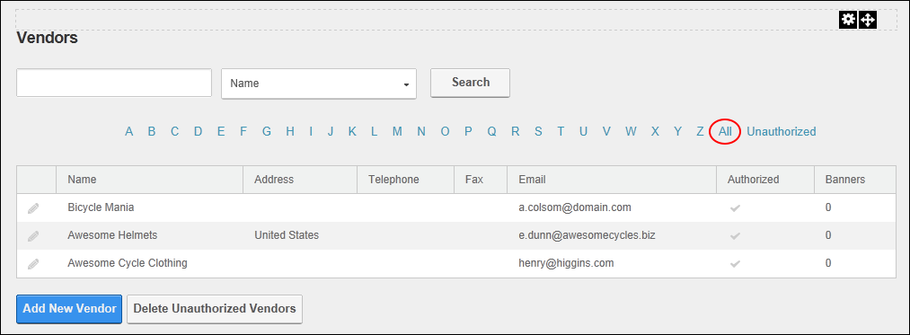

Viewing All Vendor Accounts
How to view all vendor accounts on the Vendors module.
- Navigate to Admin > Advanced Settings >
 Vendors.
Vendors.
- Click the All link. This displays the first ten (10) matching records listed alphabetically by name. The Pager control is displayed when there are more than ten matching records allowing you to access the other records.

Viewing All Vendor Accounts